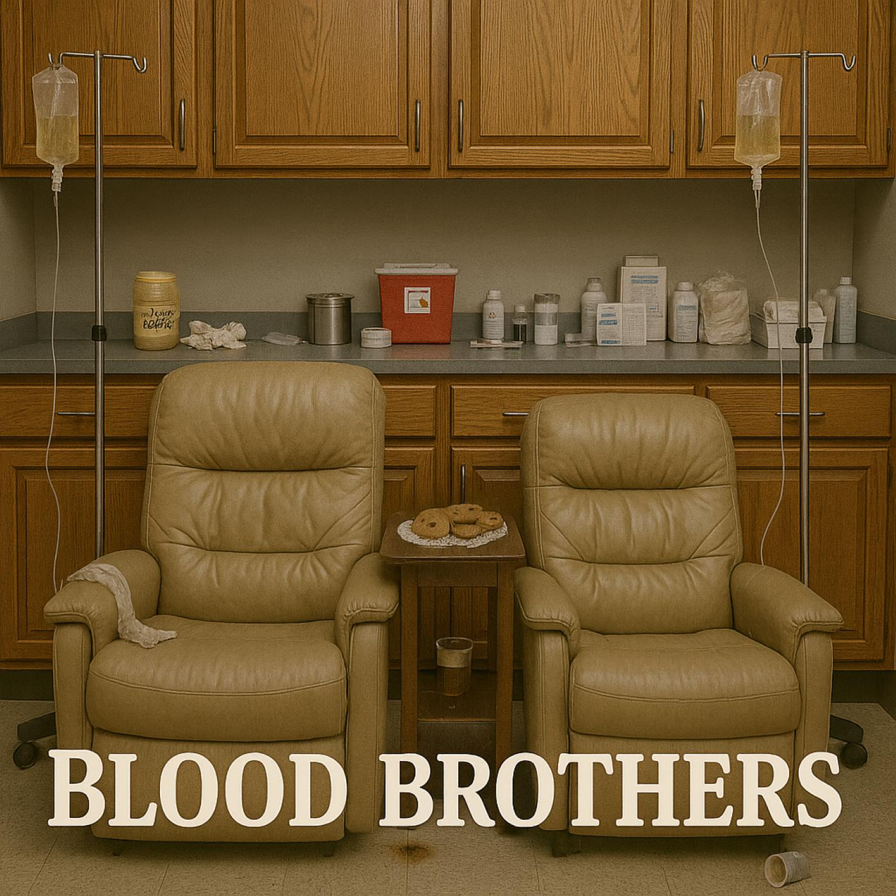

Episode 5: Blood Brothers

Download MP3 (14 MB)
Chapters
Summary
This week, John (Dusty) and Fred (Farts) wander into uncharted territory: the city’s blood donor bus. Not for civic duty, mind you, but for the perks—free cookies, questionable coffee, and a chance to turn reclining donor chairs into yet another “booth.”
Hope narrates as our heroes heckle squirrels, grade coffee filtered through medical-grade confusion, and discover that not all mugs look the same.
with the delightfully chaotic Dr. Bobby, whose medical wisdom lands somewhere between battlefield triage and bake sale disasters.
It’s a sideshow of syringes, snack negotiations, and the kind of brotherhood that proves even in the face of needles (and suspicious liquids), sarcasm flows stronger than blood.
Voices You’ll Hear
- John (Dusty) – ever-skeptical curmudgeon, coffee critic, squirrel’s nemesis
- Fred (Farts) – sentimental schemer, cookie enthusiast, professional complainer
- Dr. Bobby – eccentric Eastern European doctor with goat-filled anecdotes and a cursed Casio watch
- Hope – narrator, conspiratorial and bemused guide through medical mayhem
Sound Stage
- The Blood Donor Bus – a rolling clinic-meets-carnival: squeaky recliners pushed into “booth” formation, needle taps, coffee pours, and the hum of questionable medical equipment
Transcript
Title
John: Well. …Wouldja lookit that? Vermin squirrel over there is eyeballin’ me like it’s been reading my cholesterol panels.
Fred: At least that squirrel knows where it is going. … Unlike me yesterday… ended up brushin’ my teeth in the garage.
John: Hop on, Farts. Here’s the donor bus. Only ride in town where you can drain the tank and fill a cup at the same time. Hope Intro 2 Hope walking intro Longer longer walk for John and Fred, sounds of chairs being pulled together ** Welcome to the city’s blood donor bus. It’s a rolling clinic, a questionable cafeteria, and, most importantly, the only place the city will still let Dr. Bobby practice medicine. But, More on him in a bit. … The staff grudgingly allow John and Fred aboard this “sideshow of syringes and specimen cups, but not because of any supposed blood donations. To be perfectly honest, most of what they give is immediately centrifuged, exposed to UV lighting, filtered exhaustively and returned whole and intact to these bold booth brothers.
Fred: I’ll say this. … these nurses handle a vein about as slick as Lyle and the greasy boys handle filters down at the Jiffy Lube. In fact, we call our blood donor trips … Jiffy Jabs.
Hope: Despite having zero net effect on the local blood supply, the staff keep them around for different reasons. they’re entertainment. A sideshow. Their banter distracts the other donors during difficult needle insertions. … But most importantly, they usually scare the other patrons into much healthier life choices.
John: Eat your broccoli, ya cowards!
Prolog
Hope: And while most people would politely take a single chair, John and Fred insist on treating the donor recliners like a booth. … For they would never dare sit elsewhere.
Fred: Can’t teach an old butt new seats.
[chair scraping sounds]
Hope: So once a week, with a sigh and a shove, the nurses push two loungers together, forming what has become a permanent fixture.
John: Home sweet upholstery.
Hope: The regulars have a name for it — half-joking, half-resigned. They call it “The Old Farts’ Corner. Conversation 1
John: Mercy, Farts… your side of this booth got more divots than a driving range. … All courtesy of that derriere of yours.
Fred: Now see here … Jealousy don’t suit ya, Dusty. … This here’s custom fit upholstery — made by nature, perfected by biscuits.
John: Hmph… This booth may have character, but it’s too dern clean. Just too clean … Needs more cracks, a few good grease stains, maybe a ketchup constellation. Dr. Bobby entrance Dr. Bobby comes running up.
John: Oh hey, if it ain’t Dr. Bobby, the fastest syringe this side of Maple Avenue.
Fred: Hi, Dr. Bobby, it’s been a long time.
Dr. Bobby: No, it has not been long. Evidence is clear — coconut crumbs from yesterday’s macaroon… and still ‘I Donated’ sticker on your chest. You look like walking bake sale.
Fred: Well, roll me in cornmeal and call me hushpuppy. … I do believe you’re right…. Those macaroons yesterday were delightful. What’s on the agenda today, Doc? Dr. Bobby Is interesting … In my homeland, we do not have cookie after blood donation. We have… fermented cabbage pancake. Is good for circulation… eventually. … But today, I bring something better — my mother’s traditional Romanian cookies, made with poppy seeds and plum jam. Very chewy, very sticky… stay in molars for weeks. … Excellent for floss sales.
John: Well, set me up their good Doctor. … By the way, how is your brew today?
Dr. Bobby: Ahh, very good question, Comrade. You know how I feel about coffee consumption during blood donation. It is mandatory to keep the blood awake … otherwise, it gets bored, falls asleep in the bag.
[Dr. Bobby pours coffee]
Hope: Somehow, Dr. Bobby’s career was not confined to hospitals and buses. During the brief but extremely confusing Potato Ditch Skirmish of ’83, he served as both combat medic, and, somewhat controversially, as the camp baker. … His medical record is debated — some say he patched up entire platoons with nothing more than gauze, coffee grounds, and a suspicious amount of paprika. … Others claim his real legacy was the rye bread, which was so dense that soldiers used it as body armor.
Dr. Bobby: Is true. My Rye once deflected entire projectile.
Enter D. Bobby
Hope: To this day, historians can’t agree whether Dr. Bobby saved more lives with stitches or with strudel. … So, his reputation in the Potato Ditch remains divided. Was he a healer? A baker? Or simply a man who brought equal parts yeast and chaos to the front lines? … The answer, like his bread, is still being digested. Fred eats cookie
Fred: Boy, this cookie is sure great! … You have quite the culinary touch, doc, you ever think of retiring from medicine?
John: Technically. He’d have to start practicing it first. Maple Avenue
Dr. Bobby: Speaking of practice, my friends… today we attempt the impossible — hitting vein while traveling over Maple Avenue.
John: Not… Maple Avenue!
Dr. Bobby: Unfortunately, yes. … The city detour today leads us straight down the Pothole Parkway. … Hold steady … the bus may bounce, but my needle dances like Cossack!
Fred: Uhh, doc, Looks like you’re playin’ Whack-A-Mole over there.
Dr. Bobby: In my country, we call this the “Lurch-and-Jab Method. I perfected it during the many hours I spent riding ambulance with kaput shocks
[SFX: exaggerated blood spurt, like a ketchup bottle squeezed too hard]
Dr. Bobby: This is good! … You have veins like five-star highway. … I could drive bus through them — small bus, but still. Sounds of blood spurting
Dr. Bobby: Hold still. This is only going to hurt as much as my second divorce.
Gigi: Speaking of pain, kids, this brings us to today’s special R word. Rheumatism. Kids? Can you say Rheumatism?
Fred: Rheumatism. R. O. O. M. A. T. I. Z. M. The act of complainin’ about pain loudly enough that everyone else in the room gets it too. Rheumatism.
Dr. Bobby: Oh boy, think I’m late again. Do either of you know the time? I love this watch to death, but this thing is always wrong. Dr. Bobby runs off.
John: And there he goes … A very curious little man. Dr. Bobby background
Hope: Curious indeed. … His full name? … Bogden Ivanassimove Illianosturkavish Vassillianovoware Fresk. … His background? … trained in some Eastern European country where the line between hospital and farm was blurry. His medical thesis? … That donating blood was good for the color of the body. Unfortunately, all his research volunteers were cadavers.
Dr. Bobby: Cadavers never complain. Best patients I ever had.
Hope: But extracting meaningful responses from dead bodies wasn’t Dr. Bobby’s only problem. Math was another…. And anatomy. … It took him 23 years to finish medical school. … On one final exam, he labeled the gallbladder as ‘Mystery Pocket.’ … Before another math exam, his professors gave him a Casio Calculator Watch. … It only made matters worse, but Dr. Bobby is convinced it was a graduation gift. And it’s something he has treasured for nearly 40 years.
Dr. Bobby: How can a watch that is so wrong, feel so right?
Hope: The plastic is yellowed, the buttons don’t press properly, and it somehow always shows the wrong time. Sometimes it flashes numbers that don’t even exist.
Dr. Bobby: Darling! how can time be 27:89 p.m.?!
Hope: And yet, despite all their problems, Dr. Bobby and his little Cassie have remained together like a couple whose love language exists primarily of “what the heck do you want now? … Urban legend among the medical interns is that Dr. Bobby actually consults with Dr. Cassie on his most difficult cases. Dr. Bobby returns Dr. Bobby runs up
Dr. Bobby: Comrades, “After deep consultation with Doctor Cassie, we have concluded it is time… time for Dusty Farts to consider quarterly colonoscopies!
John: Quarterly? Good Lord, Doc… my intestines just now stopped echoing from the last excursion up Booty Bay.
Fred: Well, shiver my tender loins … Dr. Bobby… you seem awfully enthusiastic about your independent contracting job with the Maple Grove Parks & Proctology Department.
Dr. Bobby consults Dr. Cassie
Dr. Bobby: Priyatelu, my friend, colonoscopy like spelunking. … only less scenic, more. … aromatic. In my country, we call this procedure, ‘Journey to the Center of the Grits.
Fred: Well, kiss my grits then.
Dr. Bobby: Sometimes. … I hum national anthem while guiding colonoscopy probe. … keeps hands steady. … make patient very, very patriotic!
John: Patriotic? Doc, last time you got so lost in there, I swear I heard you shouting for a trail guide.
Fred: I reckon he’s the Only man I know who needs a head lamp and a goat just to find his way back from Colon Canyon.
Dr. Bobby: My friends. … Goat was sterile goat, thank you very much. … In my country of Yakackichstaan, goats are very clean. … He is now mayor. Long story. John Good grief, Doc, every story you tell ends with livestock holding political office. How ‘bout, just this once, you skip the barnyard ballot box and stick to actual good, old fashioned country doctorin’? stopped
Dr. Bobby: You want medical advice? Bolshevik Boy? My friend Jimmy says that eating raw garlic and jalepenos is great for sinus cleansing. I had often thought this was true, but have decided to give it a 7 day trial. I am on day 6, can you tell?
John: Sure thing, Dr. Hal. Dr. Bobby: Sorry, confused. Dr. Hal? Who is Dr. Hal?
John: You, silly. Doctor Haal I. Tosis.
Fred: Don’t mind him Doc., He’s so paranoid about squirrels, he thinks everything smells nutty. …. Hey, why don’t you give us some more good medical advice.
Dr. Bobby: yes! Certainly! … Best way to lower blood pressure? Don’t own pressure cooker. Best way to keep colon clean? Do not sit next to Fred at all-you-can-eat chili festival.
John: Sound advice, doc, sound advice. Specimen Cup
[Beat. John and Fred sip. The hum of the bus, someone coughs faintly in the background.]
Fred: Well, tickle my tonsils with a toothpick! … I’ll certainly give credit where credit is due…. Doctor Bobby. … your blend today is exquisite! … Much smoother than usual.
John: You sure Farts?
Fred: Absolutely! According to our C.A.F.E. scale, it scores an 8.7 … highest in the county since April.
John: Eight point seven? More like a three. Tastes like somebody strained it through a gym sock.
[SFX: Pause. Someone clears their throat. A cup clinks on the table.]
Fred: Umm, Dusty… you might wanna take another look at that cup you’re carrying over there. That ain’t no coffee mug … that’s a used urine specimen jar. John spit-take Wait, What? … Specimen cup? … Good grief, that’s not coffee — that’s concentrated kidney juice!
Fred: Well… Dusty… guess you could call that a sample roast. Looks like urine for a super special specimen brew.
Dr. Bobby: Excellent! … This will save much time in lab work. Your kidneys are percolating beautifully. Refill for the road? John and Fred stand up
John: Next week, Farts… I’m bringin’ my own thermos.
Fred: Good idea. Only next time, make sure the lid isn’t bright yellow with the red biohazard on it. John and Fred Walk off
Hope: H18.2 And so, once again, our Dusty Farts shuffled off — lighter by a pint of blood, heavier by a gallon of complaints. They came for the cookies, they argued about the coffee, and somehow… they survived another round with Dr. Bobby’s questionable credentials. In a world where veins are highways, goats are mayors, and specimen cups pass for coffee mugs…